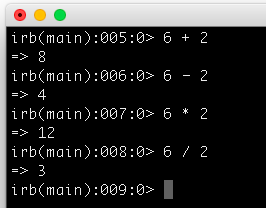
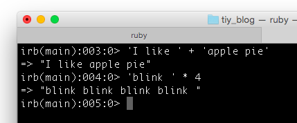
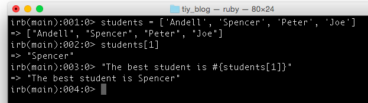
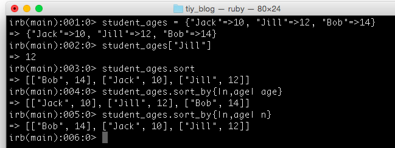

Ruby
Data Types
- Numbers
- Without decimals are called integers.
- With decimals are called floats.
- Simple Arithmetic
- Addition ( + )
- Subtraction ( - )
- Mulitplication ( * )
- Division ( / )
- Some examples
- 
- Strings
- Groups of letters
- Can have punctuation, digits, symbols, and spaces
- Can be added and mulitplied
- 
- Arrays
- Ordered, integer-indexed collections of any object
- Indexing starts at 0
- Negative index is assumed to be relative to the end of the array; [-1] indicates the last element of the array
- Can be created by using the literal constructor [ ]
- Can contain different types of objects: integers, strings, floats, etc
- Example:
- 
- Hashes
- A dictionary-like collection of unique keys and their values
- Also called associative arrays
- Similar to arrays, but where an Array uses integers as its index, a Hash allows you to use any object type
- Enumerate their values in the order that the corresponding keys were inserted
- Can be created by using the literal constructor { }
- Example:
- 
Methods
Methods are things that do stuff. If objects (like strings, integers, and floats) are the nouns in Ruby, then methods are like verbs. And, just like in English, you can't have a verb without a noun to do the verb. For example, ticking isn't something that just happens; a clock (or a watch or something) has to do it. In English we would say, "The clock ticks." In Ruby we would say clock.tick (assuming that clock was a Ruby object, of course). Programmers might say we were "calling clock's tick method," or that we "called tick on clock." (from "Learn to Program" by Chris Pine)
Examples of built-in methods:
- gets, puts, chomp
- to_i, to_s, to_f